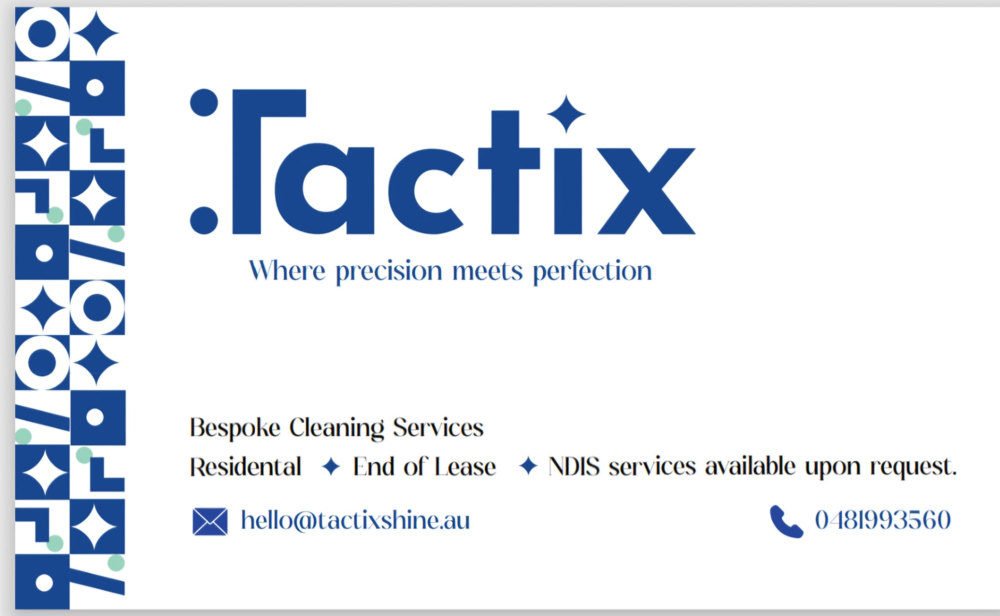
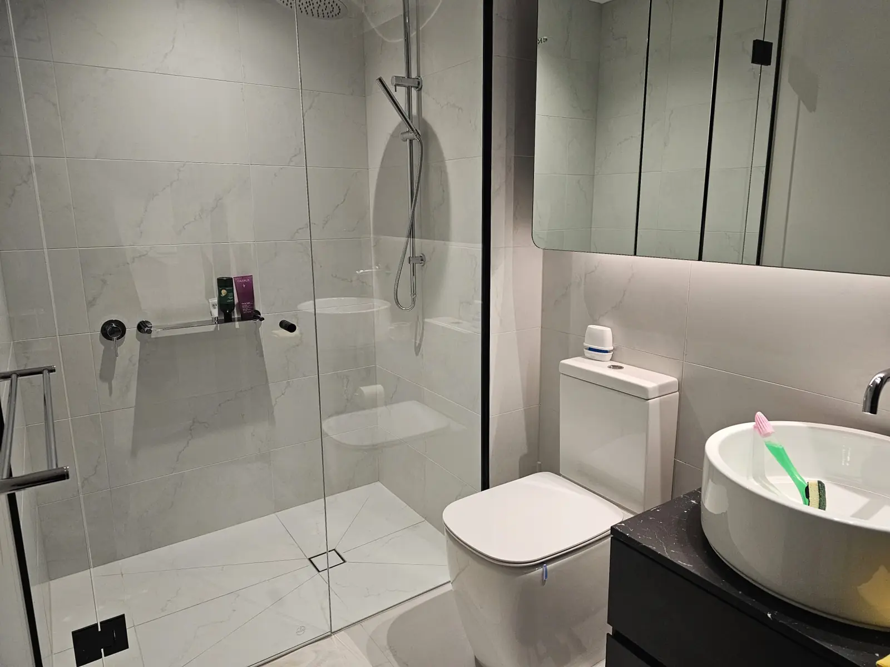
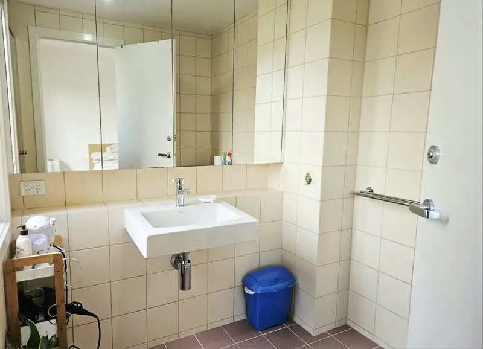
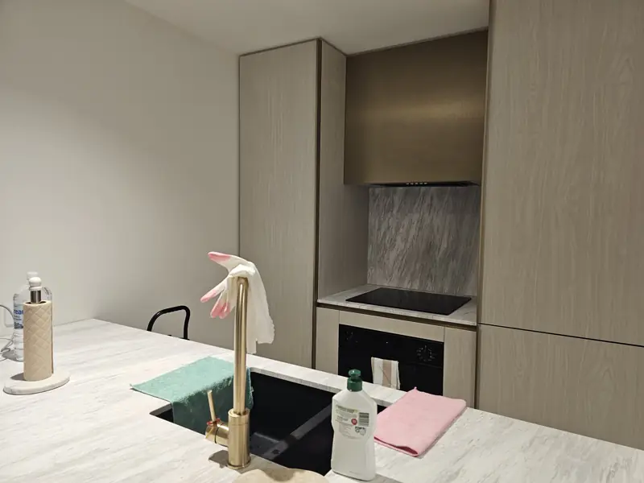
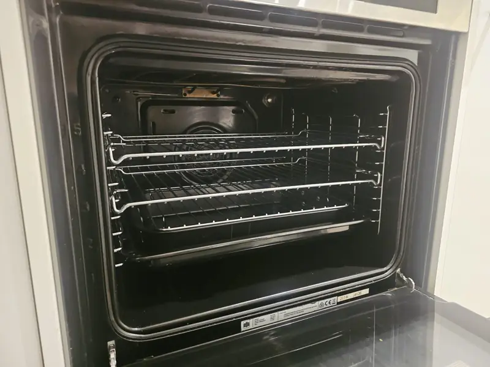

NDIS cleaning in Melbourne
Home cleaning for NDIS participants, planned around your routine and the rooms you need help with.

Photographed by our cleaners at the end of a recent job in Melbourne.
The nationally recognised check for people who work with NDIS participants.
A current police check for every cleaner.
A current check for every cleaner.
Call or email us yourself, or ask a family member, carer, support coordinator or plan manager to contact us for you.
Your suburb, the rooms you need help with, the times that suit and anything we should plan around.
We confirm what each clean covers and give you a quote before anything is booked.



Photographed by our cleaners at the end of recent jobs in Melbourne.
If you're using NDIS funding, check with your plan manager or support coordinator how cleaning fits in your plan before you arrange a clean. You don't need to send your NDIS number, plan documents or health information to get a quote.